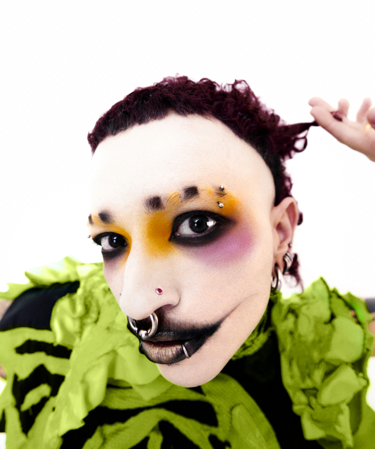

Yuri, também conhecido como Cortes Brab0s, é cabeleireiro, videomaker e diretor criativo, além de fundador do Pelo Tosco, um espaço queer e subversivo em São Paulo. Natural de Campos dos Goytacazes, RJ, começou sua trajetória aos 14 anos ajudando sua mãe no salão de beleza. Desde então, desenvolveu um estilo único e experimental que desafia padrões estéticos, criando conexões entre cabelo, arte e identidade. Hoje, com anos de experiência, Yuri lidera projetos autorais e colaborações que misturam técnica, criatividade e uma visão ousada da beleza.
Contato:
+55 11 97521-6813
Instagram:
@cortesbrab0s
